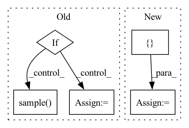

Pattern ID :9182
Before Change
def choose_action(self, state):
state = torch.unsqueeze(torch.FloatTensor(state), 0)
if np.random.uniform(0, 1) < self.epsilon:
action = self.env.action_space.sample() // Explore action space
else:
action = torch.argmax(self.eval_net(state)).numpy() // Exploit learned values
return action
def store_trajectory(self, s, a, r, s_):After Change
action.
state = state[np.newaxis, :]
action = self.sess.run(self.sample_op, { self.states: state} )[0]
return np.clip(action, -self.bound, self.bound)
In pattern: SUPERPATTERN
Frequency: 3
Non-data size: 5
Instances Fragment ID: 33272091
Project Name: skylark0924/machine-learning-is-all-you-need
Commit Name: 2a04011e72ca9c2780b4ce7375e6274fb2611943
Time: 2020-04-30
Author: 24936522+Skylark0924@users.noreply.github.com
File Name: 16PPO/16PPO.py
M Class Name: Skylark_PPO
N Class Name: Skylark_PPO
M Method Name: choose_action(2)
N Method Name: choose_action(2)
M Parent Class:
N Parent Class:
M File Name: 16PPO/16PPO.py
N File Name: 16PPO/16PPO.py
M Start Line: 36
M End Line: 41
N Start Line: 113
N End Line: 116
Before Change
train, validate, test = np.split(temp_df.sample(frac=1), [int(train_percent*len(temp_df)), int((train_percent+valid_percent)*len(temp_df))])
classes_df.append((train, validate, test))
if test_percent != 0:
train_df = (pd.concat([i[0] for i in classes_df])).sample(frac=1).reset_index(drop=True)
valid_df = (pd.concat([i[1] for i in classes_df])).sample(frac=1).reset_index(drop=True)
test_df = (pd.concat([i[2] for i in classes_df])).sample(frac=1).reset_index(drop=True)
train_ds = Dataset_from_table(data_directory=dataset.data_directory,is_dicom=dataset.is_dicom, table=train_df, mode=dataset.mode, wl=dataset.wl, transformations=dataset.transformations)
valid_ds = Dataset_from_table(data_directory=dataset.data_directory,is_dicom=dataset.is_dicom, table=valid_df, mode=dataset.mode, wl=dataset.wl, transformations=dataset.transformations)
test_ds = Dataset_from_table(data_directory=dataset.data_directory,is_dicom=dataset.is_dicom, table=test_df, mode=dataset.mode, wl=dataset.wl, transformations=dataset.transformations)
return train_ds, valid_ds, test_ds
else:
train_df = (pd.concat([i[0] for i in classes_df])).sample(frac=1) .reset_index(drop=True)
valid_df = (pd.concat([i[1] for i in classes_df])).sample(frac=1).reset_index(drop=True)
train_ds = Dataset_from_table(data_directory=dataset.data_directory,is_dicom=dataset.is_dicom, table=train_df, mode=dataset.mode, wl=dataset.wl, transformations=dataset.transformations)
valid_ds = Dataset_from_table(data_directory=dataset.data_directory,is_dicom=dataset.is_dicom, table=valid_df, mode=dataset.mode, wl=dataset.wl, transformations=dataset.transformations)
return train_ds, valid_ds
After Change
temp_df = temp_df.sample(frac=1).reset_index(drop=True)
train, validate, test = np.split(temp_df.sample(frac=1), [int(train_percent*len(temp_df)), int((train_percent+valid_percent)*len(temp_df))])
classes_df.append((train, validate, test))
output = {}
train_df = (pd.concat([i[0] for i in classes_df])).sample(frac=1).reset_index(drop=True)
valid_df = (pd.concat([i[1] for i in classes_df])).sample(frac=1).reset_index(drop=True)
output["train"] = Dataset_from_table(data_directory=dataset.data_directory,is_dicom=dataset.is_dicom, table=train_df, mode=dataset.mode, wl=dataset.wl, transformations=dataset.transformations)
output["valid"] = Dataset_from_table(data_directory=dataset.data_directory,is_dicom=dataset.is_dicom, table=valid_df, mode=dataset.mode, wl=dataset.wl, transformations=dataset.transformations) Fragment ID: 33272104
Project Name: radtorch/radtorch
Commit Name: ecc1a018eab56be121739ef8eccc1ba4a9f9c16b
Time: 2020-04-04
Author: elbanan@users.noreply.github.com
File Name: radtorch/datautils.py
M Class Name: AnonimousClass
N Class Name: AnonimousClass
M Method Name: split_dataset(5)
N Method Name: split_dataset(5)
M Parent Class:
N Parent Class:
M File Name: radtorch/datautils.py
N File Name: radtorch/datautils.py
M Start Line: 59
M End Line: 86
N Start Line: 66
N End Line: 74
Before Change
token = random.getrandbits(10)
if self.random_start:
start = {"robot": self.observation_dict["state"]["robot"].sample(),
"task": self.observation_dict["state"]["task"].sample() }
else:
start = None
// send ping with token to flush the pipes
self.send([(env_id, "ping", token) for env_id in self.pipes.keys()])After Change
self.send([(env_id, "ping", token) for env_id in self.pipes.keys()])
if desired_states is None:
desired_states = [ None Fragment ID: 33272099
Project Name: tmdt-buw/karolos
Commit Name: aa58afb21952c4008ea5f2dbf6a0459f21b90f5b
Time: 2020-05-13
Author: scheiderer@uni-wuppertal.de
File Name: environments/orchestrator.py
M Class Name: Orchestrator
N Class Name: Orchestrator
M Method Name: reset_all(2)
N Method Name: reset_all(1)
M Parent Class: object
N Parent Class: object
M File Name: environments/orchestrator.py
N File Name: environments/orchestrator.py
M Start Line: 84
M End Line: 97
N Start Line: 83
N End Line: 96